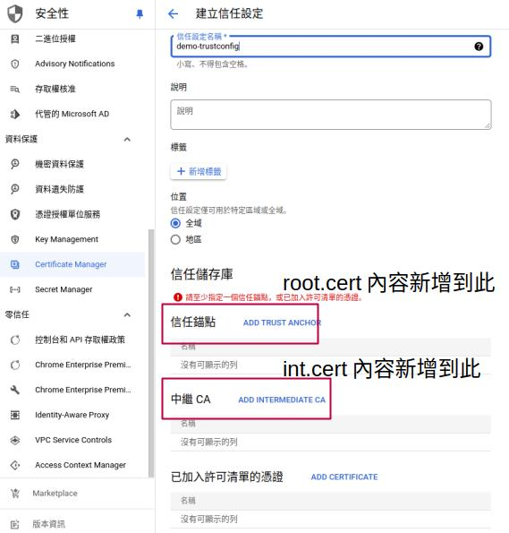
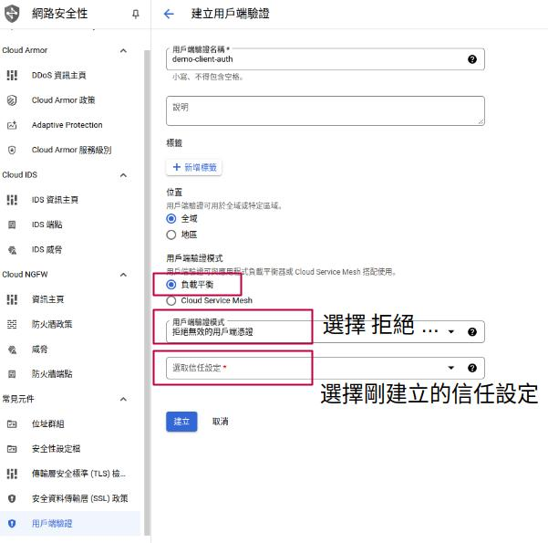

# 緣由
有一網站需要限制只有特定人員才可瀏覽，通常會使用來源 IP 進行限制，若是無固定辦公室人員（業務）則使用 VPN 連入公司網路獲得允許 IP。
但因為公司沒有自己的網路，所以沒辦法使用這個方法，因此採用 mTLS。
一般網站憑證只是單向用於驗證網站是否合法，mTLS 則是雙向驗證 雙向奔赴的憑證，除了驗證網站是否合法外，也驗證連接端 (client, browser) 是否合法。
官方文件其實有教學 (Set up mutual TLS with user-provided certificates)，但是官方文件都是透過 gcloud 設定，所以這篇紀錄一下怎麼使用 GUI 方式設定。
思路：從 load balance 下手，在 load balance 進行驗證，client 合法才導入後端。
# 需求
先安裝 openssl 用於產生憑證
# 產生根憑證
# 憑證設定檔
建立憑證設定檔 example.cnf
[req] | |
distinguished_name = empty_distinguished_name | |
[empty_distinguished_name] | |
# Kept empty to allow setting via -subj command line arg. | |
[ca_exts] | |
basicConstraints=critical,CA:TRUE | |
keyUsage=keyCertSign | |
extendedKeyUsage=clientAuth |
# 根憑證與密鑰
使用 openssl 產生根憑證密鑰 root.key 與根憑證 root.cert
openssl req -x509 \ | |
-new -sha256 -newkey rsa:2048 -nodes \ | |
-days 3650 -subj '/CN=root' \ | |
-config example.cnf \ | |
-extensions ca_exts \ | |
-keyout root.key -out root.cert |
# 產生中繼憑證
# 中繼憑證簽名請求
產生中繼憑證密鑰 int.key 跟中繼憑證簽名請求 int.req
openssl req \ | |
-new -sha256 -newkey rsa:2048 -nodes \ | |
-subj '/CN=int' \ | |
-config example.cnf \ | |
-extensions ca_exts \ | |
-keyout int.key -out int.req |
# 中繼憑證
產生中繼憑證 int.cert
openssl x509 -req \ | |
-CAkey root.key -CA root.cert \ | |
-set_serial 1 \ | |
-days 3650 \ | |
-extfile example.cnf \ | |
-extensions ca_exts \ | |
-in int.req -out int.cert |
# 建立信任設定
從 https://console.cloud.google.com/security/ccm/list/trustConfigs 建立信任設定
把前面步驟產生的 root.cert 內容增加到信任錨點、 int.cert 內容增加到中繼 CA。

# 建立用戶端驗證
從 https://console.cloud.google.com/net-security/clientauth/serverTlsPolicies 建立用戶端驗證
用戶端驗證模式選擇 負載平衡 以及 拒絕無效的用戶憑證 ，信任設定選取前一步驟建立的設定檔。

# 負載平衡設定
https://console.cloud.google.com/net-services/loadbalancing/list/loadBalancers
在負載平衡的前端設定處，選取剛建立的用戶端驗證，可能不會馬上生效，如果生效後開啟網址會是 ERR_CONNECTION_CLOSED 的訊息。
# 建立用戶端憑證
# 用戶端設定檔
建立用戶端設定檔 client.config
[req] | |
default_bits = 2048 | |
req_extensions = extension_requirements | |
distinguished_name = dn_requirements | |
prompt = no | |
[extension_requirements] | |
basicConstraints = critical, CA:FALSE | |
keyUsage = critical, nonRepudiation, digitalSignature, keyEncipherment | |
extendedKeyUsage = clientAuth | |
[dn_requirements] | |
countryName = US | |
stateOrProvinceName = California | |
localityName = San Francisco | |
0.organizationName = example | |
organizationalUnitName = test | |
commonName = test.example.com | |
emailAddress = test@example.com |
# 產生用戶密鑰與簽名請求
會產生 client.key , client.csr 。這邊會詢問金鑰密碼，後面匯出時會用到。
openssl req -new -keyout client.key -out client.csr -config client.config |
# 產生用戶端憑證
使用 int.cert 、 int.key 、 client.csr 產生用戶端憑證 client.cert
openssl x509 -req -in client.csr -out client.cert -extfile client.config -extensions extension_requirements -days 365 -CA int.cert -CAkey int.key |
測試
curl -v -k --key client.key --cert client.cert https://網址 |
# 瀏覽器匯入憑證
server 端大致上設置完成，還需設定 client 端，client 匯入憑證這邊使用 PKCS #12 格式。
首先將 client.key 、 client.cert 封裝。會產生 client.p12 。
這邊會詢問剛剛產生 client.key 時的金鑰密碼，驗證後會再詢問金鑰匯出密碼，在匯入時會需要 (可不設置)。
openssl pkcs12 -export -inkey client.key -in client.cert -out client.p12 -name "client-cert" |
# 憑證匯入
在 Windows、Linux 桌面環境大致上都直接點兩下 client.p12 後輸入匯出密碼即可。之後可開啟瀏覽器查看網站是否可正常瀏覽。
macOS 可能會出現一直詢問密碼 (匯出密碼錯誤) 的情況，強者我同事說是因為 openssl 版本差異關係，使用舊版的 openssl 重新匯出 p12 憑證即可。
macOS 還需要從 鑰匙圈 設定憑證的存取權限為一律允許，否則在瀏覽網站的時候，會一直出現詢問密碼請求允許的情況。